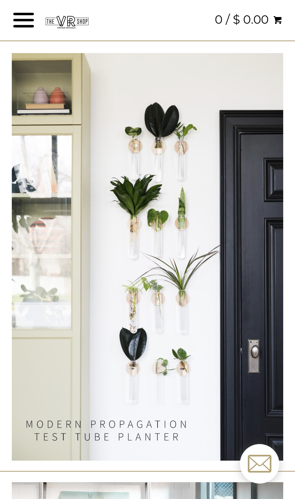
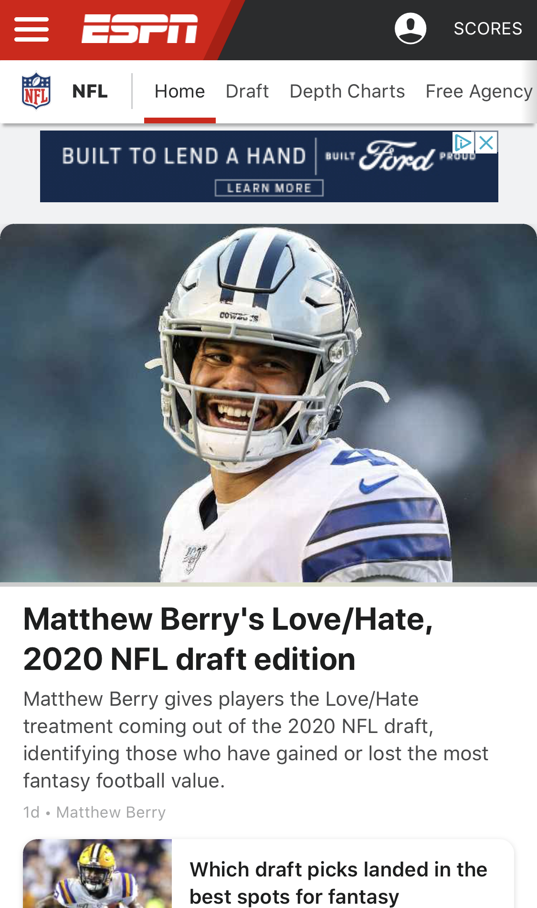

Clean Design
Vintage Revivals
Vintage Revivals has managed to present a mobile experience that is clean and well designed. I like how they make the shopping experience simple by not overcrowding the homepage, they use whitespace to provide a calm browser experience, allowing the user to focus on the product potography.
Repetition
Specialized

Specialized utilizes repetition in their button design, their use of dark and light grey to differentiate between the options they offer is a subtle choice that I think works very well.
Rule of Thirds
ESPN
I think that ESPN's mobile site gives a good example of applying the rule of thirds. Maybe the best example is the location of their logo in the top left corner of the page. It's easy to find and calls attention to itself without overpowering the main story.